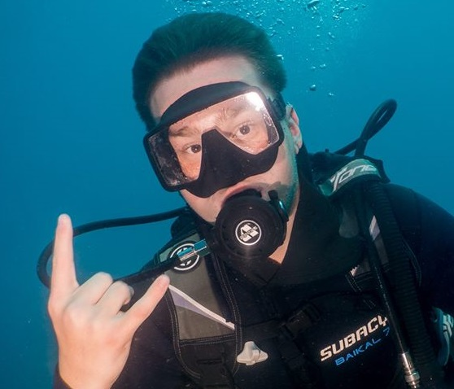

Áhugamál
Áhugamálin mín eru fótbolti og köfun(scuba diving), eg byrjaði að æfa fótbolta þegar ég var 5 ára og hætti núna fyrir nokkrum árum út af ökla meiðslumm
Ég byrjaði að kafa fyrir 2 árum þegar ég var í fríi á Tenerife og mér fannst það mjög skemmtilegt, ég hef kafað alveg niður ca 36 metra. Herna er video af mér kafa í fyrsta skipti
Um mig
Ég heiti Elvar Ágúst Þorsteinsson, Ég er 16 ára og á heima í hafnafirði

video af youtube
Meðfylgjandi verkefninu er .zip skrá með 2 vefsíðum sem þú átt að tengja saman. Normalize.css stílsíðan fylgir með en aðal stílsíðuna vantar. Þú átt að búa hana til og tengja við vefsíðurnar. Skipulag síðunnar á að vera svipað því sem sýnt er hér á vefsíðunni en lita- og leturval er frjálst
Þegar skjár er minni en 60em (960px) þá á textinn í vefsíðunni að dragast saman og vera sýnilegur